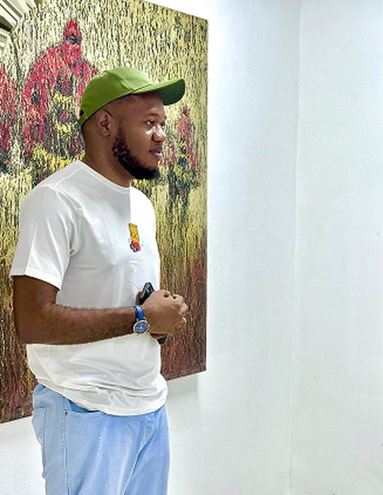
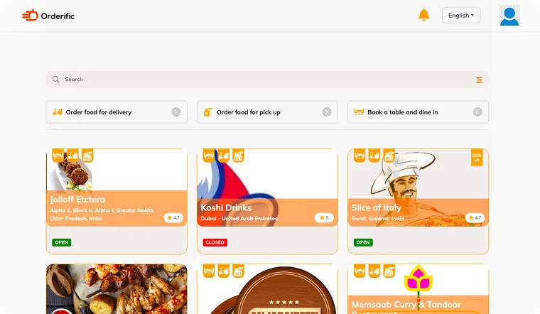
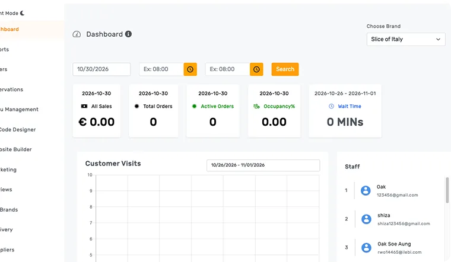
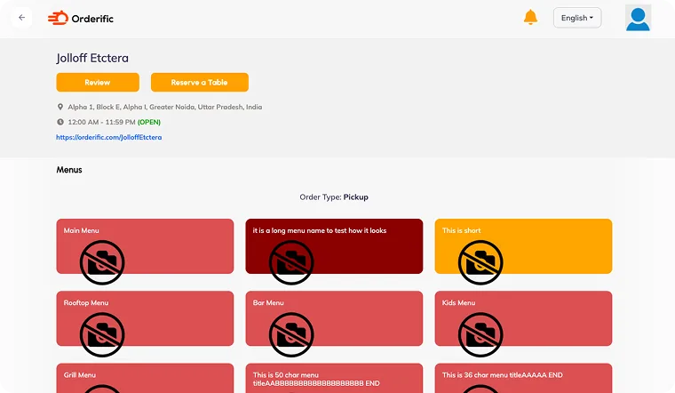

Product Designer with 7+ years of experience designing and shipping digital products for startups and growing teams.
- A generalist building with AI & shipping design systems.
- Exploring AI agents & new ways to build.
- Learning motion to bring product experiences to life.
Clients
Company’s I have worked with
About me
A little to know of me

I’m a curious builder who enjoys understanding how things work and turning ideas into useful digital products.
My journey into design started while studying law, when I had an idea for a legal app but couldn’t afford to hire a designer. So I learned to design it myself. That curiosity became a career, and for the past 7+ years, I’ve designed products across SaaS, e-commerce, AI, and other industries.
Today, I’m exploring the intersection of design, AI, and code — building beyond the interface.
Designing the system behind Orderific
How I helped turn a growing restaurant ordering platform into a scalable product ecosystem, across ordering, restaurant operations, delivery and internal tools.
Important Links
My Role
Product Design, UX/UI, Design Systems, Prototyping, Interaction Design, Accessibility
Team
Product, Engineering, QA & Design
Platforms
Web, Tablet & Mobile
I joined Orderific as its sole Product Designer, working closely with Product, Engineering and QA to design and improve a growing restaurant technology platform.
What started as an ordering experience expanded into a connected ecosystem for customers, restaurant owners, staff and delivery riders.
My job was not just to make individual screens look better. I had to create experiences that worked together, scale across products and remain practical for the team building them.
The product was growing faster than the system
When I started working on Orderific, the product was already evolving quickly.
New features were being added, new products were being introduced and different parts of the platform were solving different problems.
Customers needed a simple way to discover restaurants, place orders and track them.
Restaurant owners needed tools to manage their businesses.
Staff needed an efficient way to receive and process orders.
Delivery riders needed a completely different experience for managing deliveries while on the move.
The challenge was that each experience could easily become its own product.
CUSTOMER
That created a bigger question:
How do you make several very different products feel like one ecosystem while still allowing each of them to solve its own problems?
That became one of the biggest design challenges I worked on at Orderific.
I wasn’t just designing screens
As the product grew, I noticed that many of the problems were connected.
A component designed for one experience could appear differently somewhere else.
Patterns were being recreated instead of reused.
Some screens had too much information competing for attention.
Some flows required more steps than they needed.
And because we were designing several products at once, maintaining consistency became increasingly difficult.
At the same time, I was working as the sole Product Designer.
So every design decision had to consider more than the immediate screen.
1Inconsistent componentTap the numbers

2Old DashboardTap the numbers

3No shared design languageTap the numbers

It had to work for:
CustomersRestaurant OwnersRestaurant staffDelivery ridersDevelopers
This changed the way I approached the product.
Instead of asking:
“How should this screen look?”
I started asking;
“What system can make the next screen easier to design, build and use?”
Understanding what we already had
Before rebuilding anything, I wanted to understand where the problems actually came from.
I reviewed the existing interfaces, components and user flows across the different products.
I looked at:
- Repeated UI patterns
- Existing components and their variations
- Navigation structures
- Forms and input patterns
- Empty, loading and error states
- Responsive behaviour
- Accessibility and contrast
- Existing user feedback and reviews
- Areas of friction in important flows
- Competitor experiences
For restaurant ordering, I studied products such as Uber Eats, DoorDash and Deliveroo to understand how established platforms handled discovery, menus, carts, checkout and order tracking.
For restaurant operations, I also looked at products such as Toast and Square to understand how complex operational information could be presented without overwhelming users.
The goal wasn’t to copy competitors.
It was to understand the patterns users were already familiar with, identify opportunities and decide what made sense for Orderific.